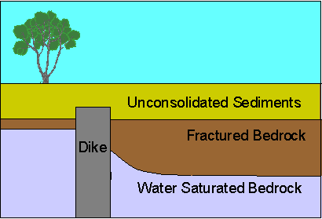
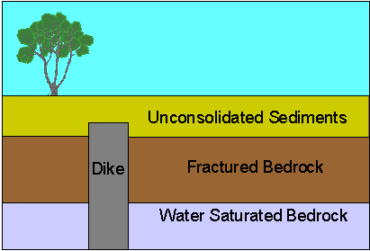

Request For Bid - DC Resistivity
Bidding Scenario
Much to the relief of your client, the vertical dike defined in the previous magnetics surveys appears to be too deep to seriously affect the construction of underground structures and foundations. Its presence, however, could alter the depth of water table by damming ground water flow across the site and creating a subsurface pool of water. The depth to water table is significant, because its presence could adversely affect construction costs and cause sewage disposal problems. Alternatively, if a dammed reservoir of water underlies the site at greater depths, it could provide an attractive source of water for the development.
Because our knowledge of subsurface structure of the site is rather limited, we can construct very different, yet plausible, models of the geology underlying the site. For example, as yet, we don't have firm estimates on the depth to bedrock, the depth to water table, or estimates of the spatial variations of either of these important parameters. Examples of two possible models of the geology underlying the site are shown below.
 
Both figures represent hypothetical east-west cross sections through the site. Notice that no scales have been provided, because the depths to the possible structures (except the estimates for the depth to the top of the dike that you have determined previously) are unknown. The top figure is a cartoon cross-section of what might be expected if water flow from west to east is being impeded by the presence of the dike. The bottom figure is a cartoon cross-section of what the subsurface structure might look like if significant amounts of subsurface water do not exist at the sight. With the information at hand, you could construct many such cross sections.
In an effort to constrain the general character of geologic models appropriate for the hydrology of the construction site, bids are being sought to collect and interpret DC resistivity measurements. It is expected that a number of resistivity soundings, taken at strategic locations across the site, could be done at a reasonable cost and should provide enough information to determine whether additional, more expensive surveys should be done.
You are free to specify the number of soundings to be taken as well as their locations and orientations (east-west or north-south) within the survey area. Unfortunately, one of the disadvantages to DC resistivity surveying is that relatively large electrode spreads must be used to see relatively shallow features. Because of the dense urban environment east of the survey site and the presence of uncooperative landowners north, west, and south of the site, your survey must be confined to the client's property.
In designing this survey, you will need to specify not only the number and locations of soundings to be conducted , but also the type of survey, the minimum and maximum electrode spacings to be used, the number of readings for each electrode configuration, and the number of electrode spacings per decade in electrode distance to be collected.
Your submitted bid should contain the following:
- A brief description of the problem, including your interpretation of the gravity and magnetic data already collected,
- A brief discussion of survey design considerations,
- A survey plan including
- Number of soundings to be collected,
- The location of the center point of each sounding given in standard survey coordinates,
- Orientation of each sounding (east/west or north/south),
- Survey type to be used (allowable types are Wenner and Schlumberger),
- Minimum electrode spacing to be used at each sounding,
- Number of electrode spacings to be collected per decade in electrode distance,
- Number of decades in electrode distance over which to collect data, and
- Number of readings over which to average for each electrode spacing,
- A brief discussion of the survey design limitations and an estimate of the probability of success for this type of survey given the problem at hand,
- An appendix that contains a list of "if-then" statements that describes the physics of the problem under consideration. For example, if the water table is moved deeper, the apparent resistivity curve does not change shape, but its inflection point moves toward large electrode spacings, and
- A break down of the survey costs and a total bid for the project.
Your bid should be composed in the format of a memo and be no longer than two type-written pages. Feel free, however, to include as many appendices as necessary.